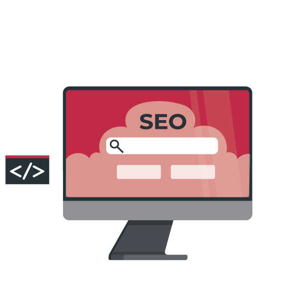

Ønsker du en nettside som ikke bare ser fantastisk ut, men også fungerer sømløst og engasjerer besøkende? Vår webdesign- og utviklingstjeneste tilbyr skreddersydde løsninger som gir deg en imponerende og brukervennlig nettside.
Vårt dyktige team av webdesignere og utviklere jobber tett med deg for å forstå dine behov og visjon. Vi tar hensyn til din merkevareidentitet og skaper et unikt design som skiller seg ut og reflekterer din virksomhets verdier.
Vi fokuserer ikke bare på det visuelle aspektet, men også på brukeropplevelsen. Vi sørger for at nettsiden er intuitiv og enkel å navigere, slik at besøkende finner det de leter etter uten frustrasjon. Responsivt design er også en viktig del av vår tilnærming, slik at nettsiden fungerer optimalt på alle enheter og skjermstørrelser.
Når det gjelder utvikling, benytter vi moderne webteknologier og beste praksis. Vi bygger nettsiden din med en solid og sikker kodebase, og implementerer nødvendige funksjoner og tilpasninger etter dine behov. Enten det er en enkel bedriftsnettsted, en nettbutikk eller en kompleks webapplikasjon, har vi kompetansen til å levere.
Markedsføring
Ønsker du markedsføring som treffer blink? Da har du kommet til rett sted! Vår markedsføringsekspertise sikrer at din virksomhet når ut til riktig målgruppe og oppnår ønskede resultater.
Vi tilbyr skreddersydde markedsføringsstrategier som tar hensyn til dine unike behov og mål. Med grundig markedsanalyse og dyktig målgruppe-segmentering, sørger vi for at dine budskap når de rette menneskene på riktig tidspunkt.

SEO-Optimalisering
Ønsker du å øke synligheten og trafikken til nettstedet ditt? Vår SEO-optimaliseringstjeneste er svaret du leter etter!
Med vår ekspertise innen søkemotoroptimalisering hjelper vi deg med å rangere høyere i søkeresultatene og tiltrekke kvalifisert organisk trafikk. Vi vet at en god SEO-strategi er avgjørende for å øke synligheten på nettet og nå potensielle kunder.
Vårt team av SEO-spesialister vil gjennomføre grundige søkeordsanalyser for å identifisere relevante søkeord og fraser for din bransje. Vi optimaliserer nettstedets innhold, meta tags, URL-struktur og intern lenkestruktur for å sikre at det er optimalt tilrettelagt for søkemotorene.